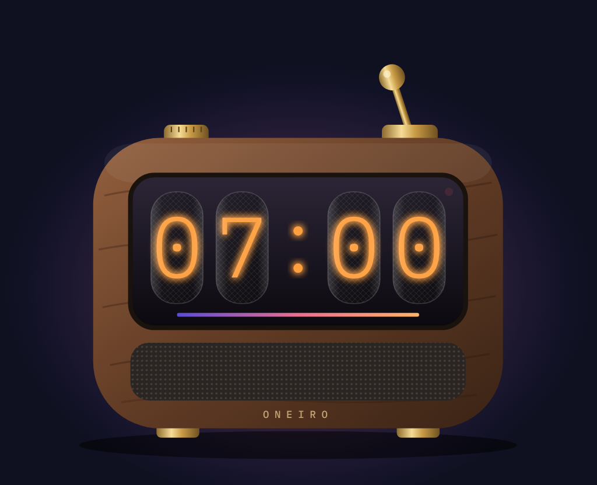
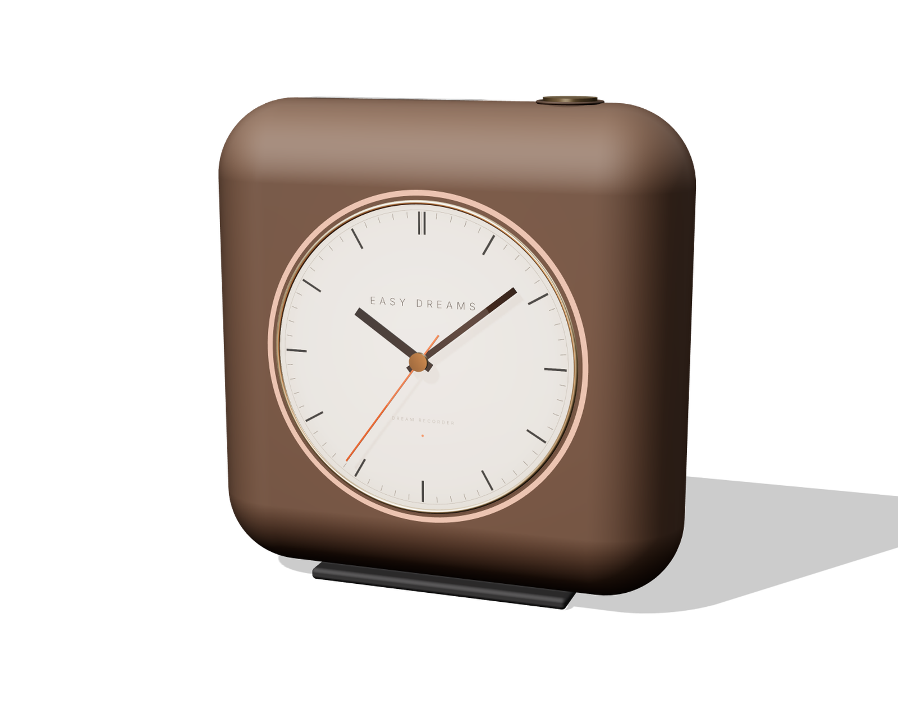
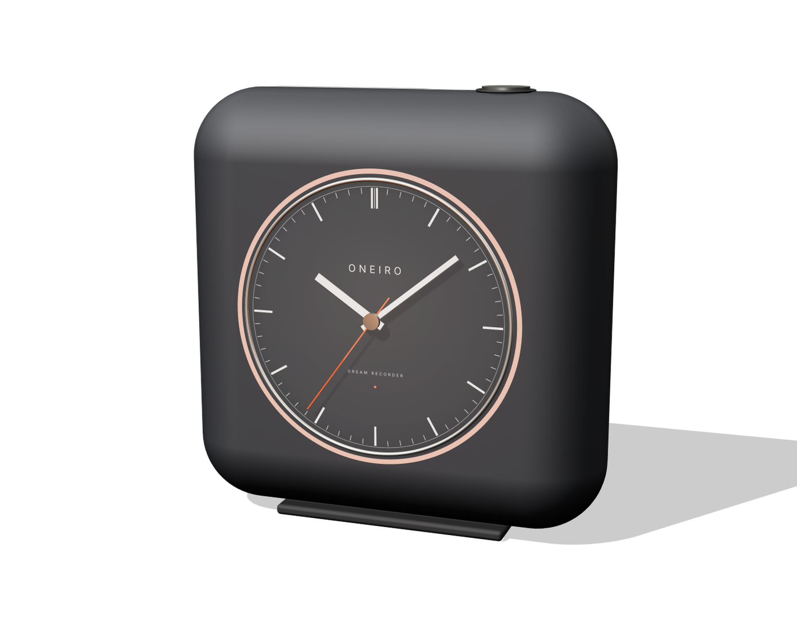

חפץ אחד ליד המיטה, בלי מסך ובלי התראות. מחוגים אמיתיים, טבעת אור שמעירה כמו זריחה, וכפתור אחד מאלומיניום: לוחצים ומספרים את החלום. כל בוקר מחכים לכם באפליקציה פירוש, תובנה וציון חלימה.

Easy Dreams נמצא בדיוק בצומת שבו המוצרים האלה הצליחו: חפץ פיזי שמשנה הרגל, וולנס בלי מסך ומנוי של נתונים. ככה לוקחים מכל אחד את העיקרון, בלי להעתיק אותו.
קובייה שלא עושה כלום חוץ מלנעול את הטלפון. ההצלחה שלה היא בתנועה הפיזית: מחליטים עם הגוף, לא עם עוד אפליקציה.
אצלנו: בוקר בלי טלפון. האפליקציות המסיחות נשארות נעולות עד שלוחצים על הכתר ומספרים את החלום, או עד 20 דקות אחרי ההשכמה.
צמיד בלי מסך שמחזיר כל בוקר מספר אחד שאכפת לך ממנו. החומרה כלולה בחברות חודשית, והעסק הוא המנוי.
אצלנו: ציון חלימה יומי, מנוי חודשי שכולל את השעון, ושום מסך על השעון עצמו.
מוצר שנראה פשוט כי כל פרט הוחלט. ומוצרים שמדברים זה עם זה, כמו נתוני שינה מהשעון שנכנסים ל־Health.
אצלנו: שלושה גימורים בלבד, אריזה שהיא חוויה, וסנכרון עם Apple Health, Apple Watch, Oura ו־WHOOP כדי לדעת מתי אתם בשלב חלימה.
הדליקו סאונד ולחצו "להעיר אותי". החדר מתבהר, הטבעת עולה מסגול לענבר, המחוגים מגיעים ל־7:00 ומתנגנת מנגינה שקטה. אחר כך מספרים את החלום. אפשר גם לסובב את השעון עם העכבר או האצבע.
06:57 · לילה. האור כבוי והמיקרופון לא מקליט.
פירוש לדוגמה שנכתב מראש
הטבעת סביב החוגה מתחילה בסגול ועוברת לענבר חם במשך 20 דקות. הגוף מתחיל להתעורר עוד לפני הצליל.
תיבת נגינה בעוצמה שעולה לאט, בלי ביפים. התעוררות רכה עוזרת לחלום להישאר, ורוב החלומות נשכחים תוך דקות.
"מה חלמת?" לוחצים על הכתר ומספרים, בעיניים חצי עצומות. הטלפון נשאר בצד, כי המסך מוחק חלומות מהר.
באפליקציה מחכים תמלול, כותרת, סמלים, פירוש ושאלה אחת ליום. פעם בחודש מגיע דוח שמראה מה חוזר.
החוגה והמחוגים לקוחים משעוני שולחן קלאסיים. הגוף הוא אובייקט רך ושקט, ממשפחת המוצרים שמכירים מוולנס ומטכנולוגיה. אין מסך, אין התראות ויש כפתור אחד.


בכל הגימורים מחוג השניות כתום, וזה הצבע היחיד. הטבעת, הכתר והמסגרת הדקה עשויים מאלומיניום מוברש. אין לוגו על הגוף, השם מופיע רק על החוגה.
במקום לגלול, מקבלים שלושה מדדים פשוטים. הם מגיעים מהשעון, מההקלטה ומהשעון החכם אם יש לכם.
כמה מהחלום נשמר: אורך, פרטים, רגשות ודמויות. משתפר עם התרגול, וזה בדיוק מה שמחזיר אנשים כל בוקר.
איך החלומות מרגישים לאורך השבוע. ירידה חדה היא סימן לשים לב ללחץ או לשינה.
כמה בקרים ברצף סיפרתם חלום בלי לגעת בטלפון. ההרגל הוא המוצר.
אחרי חודש של הקלטות, האפליקציה מראה מה חוזר. זה הערך שאי אפשר לקבל ממחברת ליד המיטה.
23 חלומות מתוך 30 לילות · ממוצע 0:52 דק׳ הקלטה
בלי מיליונים ובלי מפעל משלנו. מתחילים עם ספק מעליבאבא שמייצר שעון קיים בהתאמה אישית: הצבע, הלוגו והאריזה שלנו. האפליקציה נבנית בעזרת AI. מוכרים מראש, ורק אחר כך מזמינים.
| סעיף | ₪ אלפים |
|---|---|
| דף נחיתה, סרטון ורשימת המתנה | 0–3 |
| דוגמאות מ־3–4 ספקים, כולל משלוח | 3–5 |
| אפליקציה: לבד עם AI, או פרילנסר | 0–25 |
| הזמנה ראשונה: 300 יחידות × $25–35 | 27–38 |
| משלוח, מכס ואישור אלחוטי של משרד התקשורת | 8–12 |
| שיווק התחלתי ברשתות | 5–10 |
| סה״כ | 45–90 |
אם 100–200 אנשים מזמינים מראש, ההזמנה מהספק כמעט מממנת את עצמה.
| רכיב | ₪ |
|---|---|
| שעון מהספק בהתאמה: צבע, לוגו, חוגה | 100 |
| אריזה ממותגת | 12 |
| משלוח מסין ומכס, ליחידה | 28 |
| בדיקות ויחידות פגומות | 10 |
| עלות מונחת בארץ | ≈ 150 |
את הגרסה המעוצבת לגמרי, עם אלומיניום ומפעל ייעודי, בונים רק אחרי שהמוצר מוכר.
השעון עולה פחות מאוזניות טובות. הרווח האמיתי מגיע מהמנוי, כי ה־AI עולה בערך ₪4–5 בחודש למשתמש.
בתוספת מנוי: אם 30% מהקונים משלמים ₪149 לשנה, אחרי עמלות חנות האפליקציות וה־AI נשארים כ־₪70 לשנה מכל מנוי.
דף נחיתה עם ההדמיות, סרטונים בטיקטוק ובאינסטגרם, והזמנה מוקדמת ב־₪349. המטרה היא 150 הזמנות לפני שמזמינים מהספק.
דוגמאות מכמה ספקים, תשלום דרך Trade Assurance (30% מקדמה ו־70% לפני משלוח), ורק ספקים עם אישורי CE ו־FCC.
מנוי, יוצרי תוכן מעולם הוולנס, ואז גרסה מעוצבת יותר עם אלומיניום ותוכנה משלנו בתוך השעון.
V1 כבר בהשקה. V2 לדור הבא.